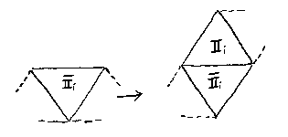

A bit of flexagon theory
Trihexaflexagon
Trihexa- is made from a straight strip of 6 triangles which joins onto itself. It's the simplest flexing flexagon.
There are actually two sorts, which you might call left and right handed, depending on whether (while making it) you wind the strip of triangles over or under itself:
We'll define the operation of flexing as ... well, flexing - that is, pinching at one corner and pushing the opposite corner in, opening the flexagon out again from the middle to reveal a new face.
The operation of flexing produces the same result for both left and right handed sorts of flexagons - it's just that the triangles move in different directions (clockwise v anticlockwise) around the hexagon. You can come back here later and check this out once we've talked about the flexing operation in more depth.
Thus we need only consider the flexagon shown on the right - the other is equivalent.
What happens when we flex the flexagon? Let's pinch the crease shown with the arrow here, and flex..
Look at the 3 triangles x, y, z. After the flex, x is under y. Check out exactly what happens, and convince yourself that exactly the same thing must happen to the triangles in each third of the flexagon - in other words in the following diagram x1, y1, z1 are exactly the same as x2, y2, z2 and as x3, y3, z3:
When we look at more complicated flexagons, we see that instead of 3 triangles x, y, z we have a more complicated structure; but whatever the structure, if the flexagon is to flex to reveal all its faces (if there are no redundant triangles whose faces don't ever get seen), then we can divide the flexagon into 3 identical parts in the same way (ie 2 triangles faces in each part).
We can therefore analyse just 2 triangles, and triplicate them at the end. We'll look at the two triangles shown as x and z,y in the diagram above.
Pats
It's going to be confusing talking about triangles, because there are triangles in the unfolded strip, and also triangles on the hexagon face of the flexagon. Therefore, I'm now going to call the triangles on the hexagon face (that is, for example, 'x' and 'z,y' above) 'pats'. This term is used in the Oakley and Wisner paper. There are 6 pats on the face of a hexaflexagon. Each pat can consist of a lot of triangles folded up, with of course only the top one showing.
We can label the six pats with Roman numerals I, II, III, IV, V, VI, going anticlockwise:
We only need consider pats I and II at this stage.
We can label the corners of each pat, and each triangle within the pat, with the letters a, b, c, as shown.
Operations on a simple flexagon
Taking our two pats again, and labelling them I and II, we have:

There are two operations to consider at first - flexing and rotating. We'll do all our flexing by pinching at the East crease (arrowed) and rotating the flexagon when necessary.
Flexing
We'll represent the pats by using the notation I; IIi, IIii. This means that the left hand pat consists of just I, and the right hand pat has two components - IIi on top, and (joining on the top edge ready for flexing) IIii on the bottom.
We can put a suffix a, b or c to indicate which corner is in the centre of the flexagon.
The flex operation can be represented by:
The bar across the top of a symbol means that this bit has been turned over.
Rotation
A flexagon is effectively invariant when rotated by a third of a turn (we just get another two pats to look at which are the same as the two we just had).
To reveal all the faces of a flexagon, sometimes we need to rotate by a sixth of a turn. It doesn't matter which direction we rotate - the result is always that the two pats I and II are in effect interchanged:
When I talk about rotating hereafter, I'll mean rotating by a sixth of a turn.
Cycling through a trihexa-
We can cycle through all the faces of a trihexa- by alternatively flexing and rotating. This can be represented thus:
We have returned to the starting position, and all three faces have been displayed.
We'll see in a moment how we can make I and IIi, IIii more complex (made of more than one triangle), and how this allow us to reveal more than 3 faces. However for the time being, note that even if I and IIi, IIii contain multiple triangles, we can still flex through this trihexa- cycle and get to the start after 3 flexes and 3 rotations (just imagine the extra triangles glued together).
More complex flexagons
Taking any flexagon, we can see that if a flex is possible, we must be able to write the pat as, eg IIi, IIii with the comma indicating the place where IIi and IIii join on the top edge. This join can only be one thickness of paper, because the flex operation cannot untangle a double thickness of paper (nor of course can the rotate operation). If the pat IIi, IIii is made of many triangles, those triangles must have started in a strip form, possible crooked, but never forking - again because neither flex nor rotation operation can untangle a forked strip.
Thus we can see that the pat IIi, IIii is made from a strip of triangles, with IIi being made from the triangles at one end of the strip, and IIii being made from the triangles at the other end of the strip.
We know that any flexagon can go through the trihexa- cycle to reveal 3 faces in order, again and again. To make flexagons with more than 3 faces we have to be able to flex in a different place. If our two pats are I; IIi, IIii we know we can flex; and furthermore we can only flex in one way because IIi, IIii are joined by a single thickness of paper. So the only way to flex to reveal more than 3 faces is to flex instead of rotating during our trihexa- cycle.
There are 3 places in the cycle where we rotate. Let's take the first:
If we are to flex here, then the pat
must have the form
in other words, be in two parts, joined at the top edge.
We're going to examine more complex flexagons by starting with a trihexa- and looking at what we have to do to increase the number of possible faces. The operation to generate another face here is:
which is the division of the pat (in this case a single triangle) into two parts (in this case both being single triangles). The original pat was part of a strip, and now the strip has expanded, with the addition of a triangle:

Note that the upper part of the strip in this diagram has been turned over, or reflected, by the operation.
After months (all right then - seconds) of deliberation, I have decided to call this operation (to add a new face to the flexagon) 'reflecto-cloning'. OK, it's not very pretty, but what's in a name?
Notice that once we have reflecto-cloned a triangle, both resulting triangles will present themselves for a further possibility of a reflecto-clone - the upper one after a single flex, and the lower after a further rotation and flex (check the diagram for the trihexa- cycle).
The reflecto-clone operation is the same whenever on the trihexa- cycle it is carried out.
Joining the flexagon strips together
We have been looking at 2 pats, out of the 6 that make up a flexagon. In a trihexa-, these 2 pats are made from a strip:
The dashed edges show joins to other pats.
We need 3 of these mini-strips to make the full flexagon. How do they join together? Each mini-strip when assembled has the top triangle folded over, and thus when joining the second mini-strip to the first, we must turn the second strip over:
Similarly we turn over the third mini-strip again (twice turned over, or the same as the first mini-strip). The resulting compound strip is:
Note I've not shown any additional tabs for glueing - I just assume you'll join the 2 dashed edges together somehow.
When we join the mini-strips for flexagons with four faces together, we note that the reflecto-clone operation introduced a second fold, and hence there is no need to turn over the middle mini-strip.
With 5 faces, we must again turn over the middle mini-strip; with 6 we don't, with 7 we do, and so on.
As an aside, notice that all flexagons are Moebius bands - i.e. they have only one 'side', and only one 'edge'. Because of this, every face will eventually appear on both sides of the flexagon. Also notice that trihexa- has one twist per mini-strip, tetrahexa- has two, pentahexa- has three, and so on.
More on reflecto-cloning
Taking the trihexa- mini-strip, and examining the trihexa- cycle, there are 3 places a reflecto-clone can be carried out (on each of the 3 triangles). The thick line shows the line of reflection:
You can check, if you wish, that the reflecto-clone operation is the same for each case. No matter where you reflecto-clone, the operation reflects along the edge of the triangle that does not join to any other triangles (ie the edge that lies on the edge of the strip), adding a new triangle in the process.
All reflecto-clones must do this, as the join between 2 triangles forming a flex-able pat (eg IIi, IIii ) following a reflecto-clone must be on the outside edge of the flexagon face.
Furthemore, any triangle that has an edge that lies on the edge of the strip can be reflecto-cloned, because the 3 original triangles in the trihexa- strip can all be reflecto-cloned, and we have seen that any triangles resulting from a reflecto-clone can themselves be reflecto-cloned.
You are probably wishing by now that I can chosen a prettier name for that operation... Well, if you're not, I certainly am.
Anyway, we have now got away from considering the 3-D form of the flexagon, and can confine ourselves to the 2-D strip. This is a lot easier on the brain.
Making new flexagons
We have already joined 3 mini-strips to make a trihexa-.
We generated 3 possible mini-strips to make a tetrahexa- (4 faces). These join together (the middle mini-strip doesn't turn over) as follows:

We can look at each of these strips as just one continuous strip when assembled as a flexagon. They are both therefore equivalent. In fact there was no need to look at 3 reflecto-clones, because of the symmetry of the trihexa-.
To make a pentahexa- (5 faces), we'll take a mini-strip from the tetrahexa-. Any mini-strip will do, as they are all equivalent. The possible reflecto-clones are:
The strip which results from three of these being joined (middle one turned over) is:
Joining 3 of any of the pentahexa- mini-strips results in a strip which is equivalent to this (try it for yourself). There is only one way to make a strip for the pentahexa-, the tetrahexa-, and the trihexa-.
To make a hexahexa- (6 faces), we again take one of the mini-strips from the pentahexa- (any will do, they're all equivalent). I'm not going through all the possibilities here - there are two more than I've shown, but the mini-strips are equivalent to those here. The 3 different mini-strips can be derived thus:
When you join these together, you find there are 3 different strips from which you can make a hexahexaflexagon; one is a straight strip, and the other two are:
Further flexagons
You now have a blueprint that allows you to make a flexagon of any size. I'm not going any further here, but there are 4 types for the heptahexa-, 12 for the octahexa-, 27 for the nonahexa- and 82 for the decahexa-.
It is rather nice to note that if we start with a trihexa- and do a reverse-reflecto-clone, we end up with an ordinary hexagon. Put another way, take the mini-strip for an ordinary hexagon, and reflecto-clone it:
We get the mini-strip for a trihexa-.
That certainly has a pleasing elegance to my mind :)
Note that reverse-reflecto-cloning the hexagon gives us something like this:
It could be said to have 6 triangles (3 triangles with 2 sides each) making up a single hexagon face, but I think we're pushing it into hyperspace a bit too far here.
Help, help... how do I fold my flexagon strip?
Every time you do a reflecto-clone, label the line of reflection with consecutive numbers, starting with a hexagon. For instance:
Now work backwards, folding at the highest number first (3 in this case). This works because you are just reversing what you did when you reflecto-cloned.
The operation of flexing always involves a twist (the direction depends on whether you have a left-handed or right-handed flexagon). Each flex twists in the same direction. You must therefore fold your strip to impart the same direction twist at each fold. The best way is to do this is to hold the end triangle (that'll be part or all of pat I) in your left hand, and always fold in an anticlockwise (or clockwise if you wish) direction.
State Diagrams
The sequence of 'flex at one corner until you get stuck, then rotate; repeat' is known as the Tuckerman traverse (Tuckerman invented it).
On my original page (July 1998), I wrote:
"You can see that the pattern of reflecto-clones determines the behaviour of the flexagon under the normal operations of flexing and rotation. No doubt there is a pretty way to put this into a formula - anyone fancy a crack at it?"
Well, Rich Holmes rsholmes@mailbox.syr.edu wrote to me and said (paraphrased), 'I expect you know all this already but when you graph the Tuckerman traverse, you find that each node of the graph is a vertex of one or more triangles. The trihexa is a single triangle; the tetrahexa is a pair of triangles with a vertex in common; the pentahexa is three triangles, one sharing a vertex with each of the other two. And so on; each reflectoclone corresponding to the addition of a new triangle to the old graph. If you collapse each triangle down to a node, you get a graph with n-2 nodes (n being the number of faces in the flexagon) which can be drawn on a hexagonal array.'
I had to admit that I wished I had 'known all that already'; Rich and I then had a brief but enjoyable time working on it - it goes like this:
We can label any face of the flexagon thus:
where the arrow shows the place to pinch if you are about to try to flex. If you can flex, all the corners labelled b end up in the centre (we showed this above). We can label not just the top face of the flexagon with a,b,c but all faces in all pats (so imagine the flexagon is made of blotting paper and the ink has run through to the reverse side). The corners thus labelled always stay together during flexes - there is is no way to flex (or rotate of course) which changes this. It doesn't matter how thick the pats are.
It's now time for you to get out your mini-strip again, and see what happens during a flex. Let us say that we have a trihexa- labelled as above. The top face is labelled 1, and we are able to flex it. We will describe this orientation as 1abc (counting the corners of the middle top triangle anticlockwise from the centre).
We flex, and we label the next face to appear 2. Check its orientation - it is 2bac. We rotate, to orientation 2bca. A further flex gives us 3cba, and a rotate 3cab. Flexing now gives 1acb, and a final rotate takes us back to 1abc.
Any rotate keeps the same 'first' corner (in the centre) and interchanges the other two subscripts - eg 1acb goes to 1abc.
Any flex gives a different face, and it keeps the same 'final' corner and interchanges the other two subscripts - eg 1abc goes to 2bac.
We can plot the faces appearing on a state diagram; I've ignored the last two suffixes of the orientation here for ease - it's still the same face, however you rotate it:
So much for the top face; what about the face underneath? Well, we know that it will have the same corner in the centre as the face on top. The face number will be the number of the face that was on the top before the last flex. Therefore, if we use the notation 'top/bottom' to show the top and bottom faces, we have:
It's quite nice to look at this from the perspective of an ant - he is at a corner of the triangle, he rotates (himself and the flexagon) and then marches forward while flexing. At the corner he rotates again, then marches forward flexing.
What happens if he marches forward from face 3c, but rather than rotating he marches straight on? Yes, when he first arrives at face 1a, there is a single thickness of paper in the middle top pat, and you can perform a reflectoclone. Thus he can march straight on with another flex to reveal the new face 4.
You can now imagine that all the triangles in the other pat (you one you did not reflectoclone) are stuck together with glue for a moment. You still have a trihexa-, and a triangular state diagram. The sequence goes:
1acb flex to 4cab rotate to 4cba flex to 3bca rotate to 3bac flex to 1abc and rotate to 1acb again. We can now unstick the glued triangles, and make a complete state diagram, including the bottom faces:
As an aside, you could have predicted that the missing top face in the new triangle of the state diagram was going to be 3, because that face after a flex would be on the bottom under 1a.
Notice that the direction of travel round the two triangles is not the same. In fact, Rich Holmes' version of this does have travel round every triangle the same way. If you say we always travel anticlockwise around the triangles, we have:
We escape from a triangle by choosing the right-most path. There are advantages for both methods I think. Both methods can fit the triangles onto the same grid, but in the first method this is a necessary consequence, whereas with the second it is merely convenient. However when we come to talk about mirror images a bit later, the second method might be easier.
I'll therefore now use the second method - always going anticlockwise around triangles.
We can expand the analysis further. At any spare corner of the state diagram, we can reflectoclone to add a new triangle and new face. This new face will be the first to appear, after the ant leaves the old state diagram. The orientations of the faces can be determined by considering what happens as the ant performs a series of flexes, without rotating (that is, taking the right-most path). Each flex interchanges the first two subscripts of the orientation, so the ant taking the right-most path will see alternating orientations - for instance a, c, a, c, a, c, a,.... This means straight lines in the state diagram read a,b,c,a,b,c..... (in the direction of flexing in the original triangle). (Note you can't actually travel down one of these straight lines). Orientations a,b and c appear in each triangle (alternating anticlockwise and clockwise).
Here's an example - the state diagram for one of the heptahexa-s. Here I've put the arrows on the sides of the triangles. New faces are labelled as they appear on the Tuckerman traverse. Where two arrows point in towards the same state, the underneath face in the middle was previously the top face:
Notice that you can reflectoclone so that the state diagram curves back round on itself:
Here we started with the top triangle, and worked round adding triangles in a clockwise direction. The latest triangle to add (the dotted one) appears to overlap - but it does not join onto the original triangle; rather, it starts a new layer, which can itself expand in any direction. Pretty though, isn't it?
Here's one Rich calls 'linear':
If you follow the Tuckerman traverse around it, one face appears again and again (face 3 in this example). Face 3 also appears on the under side repeatedly (under face 1, 5, 7, 9...)
The Tuckerman traverse can be restated as 'keep taking the right-most path'. It returns to the start having marched down each side of each triangle once and once only. It is therefore the quickest way to visit every face. It is also the uniquely quickest way to visit every face - any other path would mean marching over a triangle side twice. One way to look at this is to imagine we've found the quickest way around some flexagon; we now reflectoclone to add a face - the unique quickest way round the new triangle on the state diagram is using the Tuckerman traverse; and all flexagons can be grown from a trihexa- by reflectocloning.
If we replace each triangle with a dot, we have a hexagonal grid on which we can plot the state diagrams:
It expands in all directions, of course, and overlaps itself as necessary.
We now know how to draw any state diagram, and build a flexagon from it by using reflectocloning. Or vice versa.
So, how many unique flexagons are there of a particular order (that is, having a particular number of faces)?
Trihexa- is just a dot. Tetrahexa- is 2 dots joined by a line. Pentahexa- is 3 dots joined by lines:
Obviously there is just one of each. Here are the 3 hexahexa-s:
You can work out others for yourself if you wish.
At this point in stepped Antonio Carlos M. de Queiroz acmq@coe.ufrj.br from Brazil, who said (paraphrased), 'I worked on all this ~20 years ago, and I developed a simple method to find how many different forms are possible, a method to classify them, and a method to find how to make and fold any flexagon.'
His build technique, which he describes as 'top down', goes like this:
Decide the state diagram of the flexagon you'd like to make.
Now build a flexagon from a straight strip of sufficient size so that the target state diagram fits.
Flex your flexagon accordingly to the state diagram you have chosen; whenever the flexagon reaches a corner on the state diagram, make sure that there is only one thickness of paper in the middle top pat. If there is more than one, glue them together! (Of course you must do the same to the 2 other identical pats - the flexagon is made of 3 ministrips).
Carefully unwind your flexagon, and voilá, there you have it.
Now to the classification. You'll like this...
Label each free corner on the state diagram with a 0, and each corner which is common to two triangles with a 1. Now count out the numbers as you march around the Tuckerman traverse.
With a trihexa- you get 000. With a tetrahexa- you get 001001. With a pentahexa- you get 001010011. And so on.
These are 'circular' numbers - they don't start or end anywhere - you can 'rotate' them without changing the flexagon, because that is just starting your flexing at a different face. So tetrahexa- could be restated as 010010 or 100100, for example. You can therefore classify the flexagon by choosing the maximum (or minimum) binary number possible by 'rotating'.
Using maxima,which is Antonio's method, we have:
Trihexa- = 000; tetrahexa- = 100100; pentahexa- = 110010100; etc..
I personally prefer minima:
Trihexa- = 000; tetrahexa- = 001001; pentahexa- = 001010011;
These numbers can be generated by replacing any 0 in the preceding flexagon with 1001 - that is the same as reflectocloning at a free corner. Antonio wrote a program all those years ago (in Algol, would you believe?) to systematically replace the 0's and find the maxima; the program checked for duplicates and was therefore able to print out classifications for all the distinct varieties of flexagon of a particular order.
He's just rewritten his program in C - and intends to use it to print out state diagrams graphically. At the time of writing, he's just uploaded his original sketches - have a look at his pages http://www.coe.ufrj.br/~acmq/hexaflexagons.html.
If you use the minima method, you can say a number of things about the classification number. For instance it will always start with 001 (except trihexa-), so we could omit this. It will always contain 1001 somewhere (the last reflectoclone). It will always end in 1. A maximum of two 0's can be together. The maximum number of 1's together is (the number of faces - 3); there is always one and only one flexagon of any order like this.
Antonio also points out that the binary number will be a multiple of three long (because we replace a 0 with 1001 each time), so we could use an octal representation. Thus using the minima method and omitting the first octal digit (1 except for trihexa-), we have:
trihexa- = 0; tetrahexa- = 1; pentahexa- = 23; hexahexa- = 247, 463, 515; etc...
Mirror images
Let's backtrack a bit and consider flexagon 515. Are there two varieties? The state diagrams could be:
in other words, is the mirror image 313 a valid new flexagon?
If you build the two flexagons, you'll find that faces do come up in a different order. But turn one flexagon over and flex on the reverse side - the two flexagons are now identical! One way to look at this is to consider a particular pat ready for a flex:
The top face is P, the underneath face is R, and Q is about to appear. Thus the sequence of flex, rotate, flex, rotate, flex, rotate... will cycle through P, Q, R... But turn the flexagon over, and the sequence is reversed (it looks exactly the same except that R is now the top, and P the bottom). The sequence runs R, Q, P...
This is a general result - it doesn't matter how complex the pat is. The same thing applies to any adjacent pat which could be flexed. We progress the opposite way around the state diagram if we turn over the flexagon. This equivalent to the mirror image of the state diagram, because to get to that mirror image, we reflect the state diagram:

(which is just another way of drawing it - the sequence is unchanged) and then we reverse the direction of travel round triangles to make it anticlockwise again.
Another issue worth looking at is what happens if you take a strip ready for folding, and then reverse the direction of every fold. If you go back to the very beginning of this page, you'll find I've identified left and right handed flexagons. These correspond to flexagons with their folds reversed. Another way to look at this is to say the left and right handed varieties arise from reflectocloning starting from the left and right triangles of the ministrip for a hexagon. The direction of folding is opposite for the two reflectoclone starting points. All the same strips will arise as you carry on reflectocloning, because the operation is the same, and there is no difference between the two triangles of the ministrip for the hexagon. For example:
How many flexagons?
Apparently in about 1976 Martin Gardner wrote an article in which he mentions in passing:
"If we .... ask in how many essentially different ways a regular hexaflexagon of n faces can be made, the answer is provided by a sequence that counts the triangulations of convex polygons when rotations and reflections are excluded."
I've just found a way to map our state diagrams onto the triangulated polygons, and I'm feeling quite pleased with myself :). I will now reveal all...
Firstly what is a triangulated polygon? It's a polygon cut into triangles by straight lines connecting it's corners. Excluding rotations and reflections, there is one way to triangulate a square, and one way to triangulate a pentagon:
There are three ways to triangulate a hexagon:
and four ways to triangulate a heptagon:
Let's take the hexagon as an example; we can superimpose our state diagram for the hexahexaflexagon to get:
We need to show this will work in general for any flexagon and polygon. Let's start with a triangle and put a dot in it to represent the state diagram of a trihexa-. This will be our base which we expand from. Reflectocloning adds another dot, and another triangle. The resulting figure has four sides and can be straightened up to a square:
We have found all the triangulations of a square (just one of course). Now we can reflectoclone again, adding another triangle to the square. There are two places we can do it, but we don't care which (for either the state diagram or the triangulation) because they are mirror images. So:
Each time we add another triangle, we add another face to the polygon. Let's look at a general polygon with n sides. It can be said to be made up of a polygon of n-1 sides, with a triangle added onto the sides (I'll show this in a moment). If we know all the unique ways to triangulate the n-1 sided polygon, we can find all the unique ways to triangulate the n sided polygon, just by adding on the triangle to each face (for each of the previous triangulations). Perhaps some of these extra triangles will not result in unique triangulations due to rotation or reflection, but neither will they result in unique flexagon state diagrams.
So, we can start with a triangle (one way to triangulate - itself), and progress to a square, then a pentagon, and so on - as far as we like.
To show that a triangulated n-sided polygon must be made of a triangle added onto a n-1 sided polygon, choose any line between corners of the polygon. This must be the base of some triangle, whose apex must be one of the adjacent corners. Draw this triangle; you now have a new base of a new triangle. Continue until you run out of corners; the last line you draw creates a triangle with two sides in common with the polygon - remove it and you have a polygon with n-1 sides.
Notice if you start with the same line across the polygon and work in the other direction, you end up with another triangle, which we can regard as our first starting triangle of the trihexa-.
So we have successfully shown that the number of distinct flexagons of order n is the same as the number of distinct ways to triangulate a polygon with n sides.
Therefore we don't need to worry about heavy maths and horrible formulae because someone already did all that. I never need to struggle with that Oakley and Wisner paper again :)
We are talking 'Catalan' numbers here; the nth Catalan number apparently gives the number of ways a convex polygon with n+2 sides can be triangulated (including reflections and rotations). This relates to the number of flexagons (including reflections and rotations). The sequence goes:
1, 2, 5, 14, 42, 132, 429, 1430, 4862, 16796...
The formula is:
If we exclude reflections and rotations we get:
1, 1, 1, 3, 4, 12, 27, 82, 228, 733, 2282, 7528...
I haven't found anywhere that tells me the formula for this one yet - if you find one, or know it, let me know (please!). It's a standard thing I think.
How many unique strips?
Some different flexagons are made from the same strip by folding differently. So how many unique strips are there?
I've not found a way to get a formula for this as yet, but you can use a progressive computer technique similar to Antonio's, to automatically print out the results. I've not done this, but the idea is as follows:
We can code a ministrip, by starting at the base triangle and (like our ant) walking along it. If we have to turn left to get to the next triangle, we call out 0, if right we call out 1. For example, a hexagon is 11, a trihexa- 101, a tetrahexa- 1100
We can generate ministrips by reflectocloning. So, we take a general ministrip q,r,s for flexagon order n, where q and s are a series of 0s and 1s together, and r is a single 0 or 1. We reflectoclone at r and get a new number for the ministrip which is q,(inverse of r),r,(inverse of s). For example q=10, r=1,s=101 q,r,s=101101 after the reflectcoclone the new ministrip is 10,0,1,010 =1001010.
We combine 3 ministrips into the complete strip, remembering to turn over (invert) the middle one if necessary. Then we consider all the possible one thirds of the whole strip (ministrips) (and their inversions, because we can turn the strip over) and look for a maximum. So for ministrip 1001010, which is a flexagon of order 7, the entire strip is 1001010,0110101,1001010. The first third to consider is 1001010 with it's inversion 0110101. We choose the maximum 1001010. The next third to look at is 0010100, with it's inversion 1101011. 1101011 is larger than 1001010 so we choose that. And so on through the strip. The final maximum is the classification for that ministrip.
The whole technique, then, is to start with the ministrip classification for a hexagon, reflectoclone to get all the ministrips for the next flexagon, classify them and eliminate duplicates; print them out; repeat.
It would be nice to have a formula though......
The End
If you got here I congratulate you.
I've had some really interesting people write to me recently about this stuff, and I'm very grateful to them; it's also a lot of fun sharing ideas. So, please feel free to get in touch, especially if you can contribute. All help is most welcome :).
David King drking@enterprise.net February 1999
Back to intro page